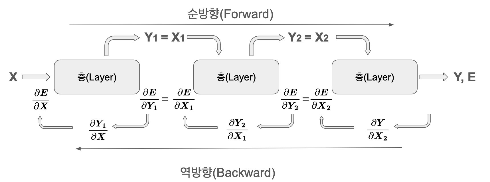

1. The Beginning of Deep Learning: Fundamental Principles and the Context of Technological Evolution
The Start of Exploring Deep Learning DNA
“True innovation in technology comes from past failures” - Geoffrey Hinton, 2018 Turing Award Lecture
1.1 Purpose of This Book
Deep learning, a field of machine learning, has been rapidly advancing with remarkable achievements. Large language models like GPT-4 and Gemini have emerged, and there are both expectations and concerns about general artificial intelligence (AGI). As research papers and technologies are developing quickly, even experts are having a hard time keeping up.
This situation is similar to the late 1980s when PCs and programming languages became popular. At that time, many technologies emerged, but only a few core technologies eventually became the foundation of modern computing. Similarly, among various deep learning architectures such as neural networks, CNN, RNN, transformer, diffusion, and multimodal, only a few that share essential DNA will remain as the basis of AI and continue to evolve.
This book starts from this perspective. Instead of simply explaining API usage, basic theory, or examples, it dissects the DNA of technological development. From the 1943 McCulloch-Pitts neuron model to the latest multimodal architecture in 2025, it focuses on the background of how each technology emerged, the fundamental problems they tried to solve, and the connection with previous technologies. In other words, it draws a map of the deep learning technology family tree. Section 1.2 provides a brief summary of the contents.
To achieve this, this book has the following characteristics:
Explanation from a DNA perspective: Instead of simply listing technologies, it explains why each technology emerged, what problems it solved, and how it is related to previous technologies, i.e., the phylogeny of technology.
Concise yet in-depth explanation: It helps readers understand core concepts and principles clearly while omitting unnecessary details.
Reflection of the latest technological trends: It includes the latest technologies up to 2025 (e.g., Retentive Networks, Mixture of Experts, Multimodal Models) and covers the forefront of deep learning development.
A bridge between practice and research: It provides a balance of practical code examples and mathematical intuition to connect theory and reality.
Advanced examples: It offers not only working code but also fully developed examples that can be directly applied to actual research or development.
Through this, we hope to help practitioners and researchers enhance their expertise. We also aim to address the ethical and social implications of AI technology and technological democratization.
1.2 History of Deep Learning
Challenge: How can machines be made to think and learn like humans?
Researcher’s Dilemma: Mimicking the complex workings of the human brain was an extremely difficult task. Early researchers relied on simple rule-based systems or limited knowledge databases, but these had limitations in handling the diversity and complexity of the real world. To create truly intelligent systems, the ability to learn from data, recognize complex patterns, and understand abstract concepts was necessary. The question was how to implement this.
The history of deep learning began in 1943 when Warren McCulloch and Walter Pitts described the neural action with the McCulloch-Pitts neuron, a mathematical model that defined the basic building block of neural networks. In 1949, Donald Hebb introduced the Hebbian Learning rule, explaining the principle of learning by adjusting synaptic weights. In 1958, Frank Rosenblatt’s Perceptron was the first practical neural network but faced limitations in nonlinear classification, such as the XOR problem.
The 1980s marked a significant breakthrough. In 1980, Kunihiko Fukushima proposed the Neocognitron (based on the Convolution Principle), which later became the core idea of CNNs. The most important advancement was the development of the backpropagation algorithm by Geoffrey Hinton’s team in 1986, enabling efficient learning in multilayer neural networks and becoming a cornerstone of neural network learning. In 2006, Hinton proposed the term “deep learning,” marking a new era.
Subsequently, with the advancement of large-scale data and computing power, deep learning experienced rapid growth. In 2012, AlexNet won the ImageNet competition with overwhelming performance, proving the practicality of deep learning. This was followed by innovative architectures using Recurrent Networks, such as LSTM (1997) and Attention Mechanism (2014). Notably, in 2017, Google’s Transformer revolutionized the paradigm of natural language processing by directly connecting different parts of input sequences through self-attention, solving long-distance dependency problems.
Based on the Transformer, BERT and GPT series emerged, leading to a significant leap in language model performance. Word2Vec in 2013 opened new horizons for word embeddings. In the field of Generative Models, after the emergence of GAN in 2014, Diffusion Models in 2020 enabled high-quality image generation. In 2021, the Vision Transformer (ViT) was introduced, successfully applying transformers to image processing and accelerating the development of Multimodal Learning.
Recently, large language models like GPT-4 and Gemini have heightened expectations for achieving AGI. These models are becoming more sophisticated by utilizing advanced architectures such as Retentive Networks in 2023, efficiency technologies like FlashAttention after 2023, and techniques such as Mixture of Experts (MoE) in 2024. Moreover, they are evolving into Multimodal models (e.g., Gemini Ultra 2.0 in 2024 and Gemini 2.0 in 2025) that integrate various forms of data like text, images, and audio, demonstrating high-dimensional cognitive abilities such as inference, creation, and problem-solving beyond simple question-answering.
The advancement of deep learning is based on the following key elements: 1. Increased availability of large-scale data 2. Advancements in high-performance computing resources such as GPUs 3. Development of efficient learning algorithms and Core Architecture, Generative Models such as Backpropagation, Attention, Transformer
These advancements continue, but there are still challenges to be addressed. Model interpretability, data efficiency, energy consumption, and the development of Efficiency & Advanced Concepts are important tasks.
The following is a visualization of the technical DNA lineage.
After the artificial neural network model (McCulloch-Pitts Neuron) proposed by Warren McCulloch and Walter Pitts in 1943, Donald O. Hebb, a Canadian psychologist, presented the basic principle of neural network learning in his book “The Organization of Behavior” in 1949. This principle is called Hebb’s Rule or Hebbian Learning, which has had a significant impact on artificial neural network research, including deep learning.
1.3.1 Hebbian Learning Rule
The core idea of Hebbian learning is very simple. When two neurons are activated simultaneously or repeatedly, the connection strength between them increases. On the other hand, if two neurons are activated at different times or only one neuron is activated and the other is not, the connection strength weakens or disappears.
This can be expressed mathematically as follows:
\[
\Delta w_{ij} = \eta \cdot x_i \cdot y_j
\]
Here,
\(\Delta w_{ij}\) is the change in the connection strength (weight) between neuron \(i\) and neuron \(j\).
\(\eta\) is the learning rate, a constant that controls the size of the connection strength change.
\(x_i\) is the activation value (input) of neuron \(i\).
\(y_j\) is the activation value (output) of neuron \(j\).
This formula shows that when neurons \(i\) and \(j\) are both activated (\(x_i\) and \(y_j\) are both positive), the connection strength increases (\(\Delta w_{ij}\) is positive). On the other hand, if only one of them is activated or both are deactivated, the connection strength decreases or remains unchanged. Hebbian learning is one of the early forms of unsupervised learning, where the neural network adjusts its connection strengths through input data patterns without given answers (labels).
1.3.2 Association with Brain Plasticity
Hebbian learning provides important insights into the actual operation of the brain, beyond a simple mathematical rule. The brain changes constantly through experience and learning, and this change is called brain plasticity or neural plasticity. Hebbian learning plays a key role in explaining synaptic plasticity, a form of neural plasticity. Synapses are the connection sites between neurons and determine the efficiency of information transmission. Hebbian learning clearly shows the basic principle of synaptic plasticity, namely, “neurons that are activated together are connected together”. Long-Term Potentiation (LTP) and Long-Term Depression (LTD) are representative examples of synaptic plasticity. LTP is a phenomenon in which synaptic connections are strengthened according to Hebb’s learning rule, while LTD is the opposite phenomenon. LTP and LTD play important roles in learning, memory, and brain development processes.
1.4 Neural Network (NN)
A neural network is a function approximator that generates values as close as possible to the desired output from the input. This can be expressed mathematically as \(f_\theta\), where \(f\) represents the function and \(\theta\) represents the parameters consisting of weights and biases. The core of a neural network is that it can automatically learn these parameters through data.
The neural network, first proposed by Warren McCullough and Walter Pitts in 1944, was inspired by biological neurons but modern neural networks are purely mathematical models. In fact, neural networks are powerful mathematical tools that can approximate continuous functions, which has been proven by the Universal Approximation Theorem.
1.4.1 Basic Structure of a Neural Network
A neural network consists of a hierarchical structure composed of an input layer, hidden layers, and an output layer. Each layer is made up of nodes (neurons) that are connected to each other and transmit information. Basically, a neural network is a combination of linear transformations and nonlinear activation functions.
Mathematically, each layer of the neural network performs the following linear transformation:
\[ y = Wx + b \]
Where:
\(x\) is the input vector
\(W\) is the weight matrix
\(b\) is the bias vector
\(y\) is the output vector
This structure may seem simple, but a neural network with sufficient neurons and layers can approximate any continuous function to any desired degree of accuracy. This is why neural networks can learn complex patterns and solve various problems.
Click to view contents (Deep Dive: Universal Approximation Theorem)
Universal Approximation Theorem
Challenge: How can we prove that a neural network can approximate any complex function?
Researcher’s Concern: Even with many layers and neurons, it was not obvious whether a neural network could truly express all continuous functions. There was concern that combinations of simple linear transformations alone might not be able to capture complex nonlinearities. Without theoretical guarantees, relying solely on empirical results was a significant hindrance to the development of neural networks.
Universal Approximation Theorem
The Universal Approximation Theorem is a core theory that supports the powerful expressive capabilities of neural networks. This theorem proves that a single-layer neural network with a sufficiently wide hidden layer can approximate any continuous function to any desired level of accuracy.
Key Ideas:
Nonlinear Activation Functions: Nonlinear activation functions like ReLU, sigmoid, and tanh are the key elements that enable neural networks to express nonlinearities. Without these activation functions, no matter how many layers are stacked, the result would only be a combination of linear transformations.
Sufficiently Wide Hidden Layer: If the number of neurons in the hidden layer is sufficiently large, the neural network gains the “flexibility” to express any complex function. It’s similar to being able to create any mosaic picture with enough pieces.
Mathematical Expression:
Theorem (Universal Approximation Theorem):
Let \(f : K \rightarrow \mathbb{R}\) be any continuous function defined on a compact set \(K \subset \mathbb{R}^d\). For any error bound \(\epsilon > 0\), there exists a single-layer neural network\(F(x)\) that satisfies the following condition:
\(|f(x) - F(x)| < \epsilon\), for all \(x \in K\).
Here, \(F(x)\) takes the form of:
\(F(x) = \sum_{i=1}^{N} w_i \cdot \sigma(v_i^T x + b_i)\)
Detailed Explanation:
\(f : K \rightarrow \mathbb{R}\):
\(f\) is the target function to be approximated.
\(K\) is the domain of the function, a compact set in \(\mathbb{R}^d\) (d-dimensional real space). A compact set intuitively means a “bounded and closed” set. For example, in one dimension, a closed interval [a, b] is a compact set. This condition does not impose significant restrictions in practical scenarios because most real input data have limited ranges.
\(\mathbb{R}\) is the set of real numbers. Thus, function \(f\) maps each point (\(x\)) in \(K\) to a real value (\(f(x)\)). (For multivariable functions or multiple outputs, additional explanations are provided below.)
\(\epsilon > 0\): An arbitrary positive number representing the accuracy of the approximation. The smaller \(\epsilon\) is, the more accurate the approximation.
\(|f(x) - F(x)| < \epsilon\): For all \(x \in K\), the difference between the actual function value \(f(x)\) and the neural network’s output \(F(x)\) is less than \(\epsilon\). This means the neural network can approximate function \(f\) within an error margin of \(\epsilon\).
\(F(x) = \sum_{i=1}^{N} w_i \cdot \sigma(v_i^T x + b_i)\): Represents the structure of a single-layer neural network.
\(N\): The number of neurons (units) in the hidden layer. The Universal Approximation Theorem guarantees that there exists a sufficiently large\(N\), but does not specify how large it needs to be.
\(w_i \in \mathbb{R}\): The output weight between the \(i\)th hidden layer neuron and the output layer neuron. It is a scalar value.
\(\sigma\): A nonlinear activation function. Various functions such as ReLU, sigmoid, tanh, and leaky ReLU can be used. For the Universal Approximation Theorem to hold, \(\sigma\) must be non-polynomial and either bounded or piecewise continuous.
\(v_i \in \mathbb{R}^d\): The input weight vector of the \(i\)th hidden layer neuron. It has the same dimension as the input \(x\).
\(v_i^T x\): The inner product (dot product) of vector \(v_i\) and input vector \(x\).
\(b_i \in \mathbb{R}\): The bias of the \(i\)th hidden layer neuron. It is a scalar value.
Multivariate functions: The Universal Approximation Theorem also holds when the input \(x\) is a vector (\(x \in \mathbb{R}^d\), \(d > 1\)). The operation \(v_i^T x\) (inner product) naturally handles multivariate inputs.
Multiple outputs: If the function \(f\) has multiple output values (\(f : K \rightarrow \mathbb{R}^m\), \(m > 1\)), separate output layer neurons and weights can be used for each output. Thus, \(F(x)\) will have a vector-shaped output, and the approximation error for each output can be made less than \(\epsilon\).
Error Convergence Rate (Barron’s Theorem):
According to Barron’s theorem, under certain conditions (regarding the activation function and the Fourier transform of the function being approximated), the error \(\epsilon\) has the following relationship with the number of neurons \(N\):
\(\epsilon(N) = O(N^{-1/2})\)
This means that as the number of neurons increases, the error decreases at a rate of \(N^{-1/2}\). In other words, doubling the number of neurons will roughly halve the error. This is the general convergence rate, and specific functions or activation functions may exhibit faster or slower convergence rates.
Counterexamples and Limitations:
Boundary approximation: Functions like \(e^{-1/x^2}\), which are infinitely differentiable at \(x=0\) but change rapidly, can be difficult to approximate with neural networks near \(x=0\). This problem occurs because the Taylor series of such functions is zero, but the function itself is not.
Exponential complexity of discrete functions: The number of neurons required to approximate an \(n\)-variable Boolean function can be proportional to \(2^n / n\) in the worst case. This means that as the number of input variables increases, the required number of neurons can increase exponentially. This shows that neural networks cannot efficiently approximate all functions.
Key Summary: The universal approximation theorem states that a feedforward neural network with a sufficiently large hidden layer can approximate any continuous function to an arbitrary accuracy over a bounded closed set, provided that the activation function is nonpolynomial. This means that the neural network has a very powerful representational power and provides a theoretical foundation for deep learning. Barron’s theorem provides insight into the rate of convergence of the error.
Important points
Existence proof: The universal approximation theorem proves existence, but does not provide a learning algorithm. It guarantees that such a neural network exists, but finding it in practice is another problem (solved by backpropagation and gradient descent).
Single-layer vs. multilayer: In practice, multilayer neural networks are often more efficient and have better generalization performance than single-layer ones. The universal approximation theorem provides a theoretical foundation for deep learning, but the success of deep learning is due to a combination of factors such as multilayer structure, special architectures, and efficient learning algorithms. Single-layer neural networks can theoretically express everything, but are much harder to train in practice.
Limitations: The universal approximation theorem is a powerful result, but it does not guarantee that every function can be efficiently approximated. As seen in counterexamples, certain functions may require an enormous number of neurons to approximate.
References:
Cybenko, G. (1989). Approximation by superpositions of a sigmoidal function. Mathematics of Control, Signals, and Systems, 2(4), 303-314. (Early universal approximation theorem for sigmoid activation function)
Hornik, K., Stinchcombe, M., & White, H. (1989). Multilayer feedforward networks are universal approximators. Neural Networks, 2(5), 359-366. (Universal approximation theorem for more general activation functions)
Barron, A. R. (1993). Universal approximation bounds for superpositions of a sigmoidal function. IEEE Transactions on Information Theory, 39(3), 930-945. (Barron’s theorem on the rate of convergence of the error)
Pinkus, A. (1999). Approximation theory of the MLP model in neural networks. Acta Numerica, 8, 143-195. (More in-depth review of the universal approximation theorem)
Goodfellow, I., Bengio, Y., & Courville, A. (2016).Deep Learning. MIT Press. (Chapter 6.4: Deep learning textbook with related content)
1.4.2 Linear Approximator for House Price Prediction
To understand the basic concept of neural networks, let’s look at a simple linear regression problem. Here, we use the California housing price dataset from the scikit-learn library. This dataset includes several features of houses, and we can create a model that predicts house prices using these features. For simplicity, let’s assume that house prices are determined by one feature, the median income (MedInc), and implement a linear approximator.
Code
import numpy as npimport pandas as pdimport seaborn as snsimport matplotlib.pyplot as pltfrom sklearn.datasets import fetch_california_housingfrom sklearn.linear_model import LinearRegressionfrom sklearn.model_selection import train_test_split# Load the California housing datasethousing = fetch_california_housing(as_frame=True)data = housing.frame# Use only Median Income (MedInc) and Median House Value (MedHouseVal)data = data[["MedInc", "MedHouseVal"]]# Display the first 5 rows of the dataprint(data.head())# Split the data into training and testing setsX_train, X_test, y_train, y_test = train_test_split( data[["MedInc"]], data["MedHouseVal"], test_size=0.2, random_state=42)# Create and train a linear regression modelmodel = LinearRegression()model.fit(X_train, y_train)# Make predictions on the test datay_pred = model.predict(X_test)# Prepare data for visualizationplot_data = pd.DataFrame({'MedInc': X_test['MedInc'], 'MedHouseVal': y_test, 'Predicted': y_pred})# Sort for better line plot visualization. Crucially, sort *after* prediction.plot_data = plot_data.sort_values(by='MedInc')# Visualize using Seabornplt.figure(figsize=(10, 6))sns.scatterplot(x='MedInc', y='MedHouseVal', data=plot_data, label='Actual', alpha=0.6)sns.lineplot(x='MedInc', y='Predicted', data=plot_data, color='red', label='Predicted', linewidth=2.5)plt.title('California Housing Prices Prediction (Linear Regression)')plt.xlabel('Median Income (MedInc)')plt.ylabel('Median House Value (MedHouseVal)')plt.legend()plt.show()# Print the trained weight (coefficient) and bias (intercept)print("Weight (Coefficient):", model.coef_[0])print("Bias (Intercept):", model.intercept_)
The code first loads the California housing price dataset using the fetch_california_housing function. It retrieves the data in Pandas DataFrame format with as_frame=True, then selects only the features for house prices (MedHouseVal) and median income (MedInc). The data is split into training and test sets using the train_test_split function, and a linear regression model is created using the LinearRegression class. The model is trained on the training data using the fit method, and it makes predictions on the test data using the predict method. The actual values and predicted values are visualized using Seaborn. Finally, the weights and biases of the trained model are printed.
In this way, even a simple linear transformation can make some predictions possible. Neural networks add non-linear activation functions to this and stack multiple layers to approximate much more complex functions.
1.4.3 The Road to Neural Networks: Matrix Operations
The precursor to neural networks is linear approximators. Here, we will take a closer look at how the previous example arrives at its actual values. For an actual value \(\boldsymbol y\), the simplest linear equation is \(\boldsymbol y = \boldsymbol x \boldsymbol W + \boldsymbol b\).
Here, \(\boldsymbol W\) represents the weight parameter and \(\boldsymbol b\) represents the bias. Optimizing these two parameters through data is at the core of neural network learning. As we will see in section 1.4, neural networks introduce non-linearity by adding an activation function to linear transformations and optimize parameters through backpropagation. Here, we will look at the simple calculation process using only linear transformation and backpropagation.
Initially, the parameters are set to arbitrary values.
Parameter optimization uses gradients. The gradient points in the direction of increasing error, so subtracting it from the current parameters reduces the error. Introducing a learning rate (\(\eta\)) yields:
The bias is also updated in the same manner. Repeating these forward and backward calculations to optimize parameters is the learning process of neural networks.
1.3.4 Implementation with NumPy
Let’s look at implementing linear approximators using NumPy. First, prepare the input data and target values.
Code
import numpy as np# Set input values and target valuesX = np.array([[1.5, 1], [2.4, 2], [3.5, 3]])y = np.array([2.1, 4.2, 5.9])learning_rate =0.01# Adding the learning_rate variable here, even though it's unused, for consistency.print("X =", X)print("y =", y)
X = [[1.5 1. ]
[2.4 2. ]
[3.5 3. ]]
y = [2.1 4.2 5.9]
The learning rate is set to 0.01. The learning rate is a hyperparameter that affects the model’s learning speed and stability. Weights and biases are initialized.
Code
m, n = X.shape# Initialize weights and biasweights = np.array([0.1, 0.1])bias =0.0# Corrected: Bias should be a single scalar value.print("X.shape =", X.shape)print("Initial weights =", weights)print("Initial bias =", bias)
Forward calculation performs a linear transformation, which can be expressed as follows. \[ \boldsymbol y = \boldsymbol X \boldsymbol W + \boldsymbol b \]
I calculated the loss. The next step is to calculate the gradient from the loss. How do I do it? The gradients of the weight and bias are as follows.
\(\nabla_w = -\frac{2}{m}\mathbf{X}^T\mathbf{e}\)
\(\nabla_b = -\frac{2}{m}\mathbf{e}\)
Here, \(\mathbf{e}\) is the error vector. Once I have the gradient, I subtract the gradient value from the existing parameter to get the updated new value of the parameter.
Code
weights_gradient =-2/m * np.dot(X.T, error)bias_gradient =-2/m * error.sum() # Corrected: Sum the errors for bias gradientweights -= learning_rate * weights_gradientbias -= learning_rate * bias_gradientprint("Updated weights =", weights)print("Updated bias =", bias)
The above steps are backward calculations. It is also called backpropagation because the gradient is sequentially passed backwards. Now, let’s implement the entire training process as a function.
Code
def train(X: np.ndarray, y: np.ndarray, lr: float, iters: int=100, verbose: bool=False) ->tuple:"""Linear regression training function. Args: X: Input data, shape (m, n) y: Target values, shape (m,) lr: Learning rate iters: Number of iterations verbose: Whether to print intermediate steps Returns: Tuple: Trained weights and bias """ m, n = X.shape weights = np.array([0.1, 0.1]) bias =0.0# Corrected: Bias should be a scalarfor i inrange(iters):# Forward pass y_predicted = np.dot(X, weights) + bias error = y - y_predicted# Backward pass weights_gradient =-2/m * np.dot(X.T, error) bias_gradient =-2/m * error weights -= lr * weights_gradient bias -= lr * bias_gradientif verbose:print(f"Iteration {i+1}:")print("Weights gradient =", weights_gradient)print("Bias gradient =", bias_gradient)print("Updated weights =", weights)print("Updated bias =", bias)return weights, bias
We test the trained model.
Code
# Train the modelweights, bias = train(X, y, learning_rate, iters=2000)print("Trained weights:", weights)print("Trained bias:", bias)# Test predictionstest_X = np.array([[1.5, 1], [2.4, 2], [3.5, 3]])test_y = np.dot(test_X, weights) + biasprint("Predictions:", test_y)
In the case of 50 iterations, it can be seen that there is quite an error between the predicted value and the actual value. One more thing to look at is the learning rate. Why is a very small value multiplied by the gradient? Let’s repeat it once and output the calculated parameter value.
Code
num_iters =1weights, bias = train(X, y, learning_rate, iters=num_iters, verbose=True)
By comparing the trained weight and bias values obtained through 1,000 iterations of training, we can see that the gradient value is very large. If the learning rate does not greatly reduce the gradient value, the parameters will not be able to reduce the error and will continue to oscillate. Please try testing with a large learning rate value.
What’s different about this ‘linear approximator’ compared to a neural network approximator? The difference is one thing: after linear calculation, it passes through an activation function. This can be expressed in the following formula.
\[ \boldsymbol y = f_{active} ( \boldsymbol x \boldsymbol W + \boldsymbol b ) \]
The code is also simple. There are several types of activation functions, and if you use the tanh function, it becomes as follows.
Code
y_predicted = np.tanh(np.dot(X, weights) + bias)
Neural networks typically represent each step of applying linear transformations and activation functions as the concept of a layer. Therefore, implementing it in two steps as follows is more suitable for layer representation and is preferred.
Code
out_1 = np.dot(X, weights) + bias # First layery_predicted = np.tanh(out_1) # Second layer (activation)
Click to view contents (Deep Dive: Cerebral Cortex Plasticity Theory)
Cortical Plasticity Theory
Mountcastle’s Cortical Plasticity Theory
Vernon Mountcastle was a scientist who made significant contributions to the field of neuroscience in the late 20th century, particularly in the study of the functional organization of the cerebral cortex. One of Mountcastle’s major achievements was the discovery of columnar organization. He found that the cerebral cortex is organized in vertical columns, and neurons within the same column respond to similar stimuli.
Mountcastle’s theory provides an important foundation for understanding the plasticity of the cerebral cortex. According to his theory:
Columns as functional units: The cerebral cortex is composed of columns as basic functional units. Each column contains a group of neurons that respond to specific sensory modalities or movement patterns.
Plasticity of columns: The structure and function of columns can change based on experience. Repeated exposure to specific stimuli can increase the size of the column processing those stimuli or enhance its responsiveness. Conversely, lack of stimulation can decrease the size of the column or weaken its responsiveness.
Competitive interactions: Adjacent columns interact competitively. An increase in activity in one column can suppress activity in another column, which serves as a basis for experience-dependent cortical reorganization. For example, frequent use of a specific finger can expand the cortical area responsible for that finger, while relatively shrinking the areas responsible for other fingers.
Mountcastle’s columnar organization and plasticity theory have the following clinical implications:
Recovery after brain damage: Functional recovery after stroke or traumatic brain injury can occur through reorganization of the surrounding cortex.
Sensory loss and rehabilitation: After visual or auditory loss, the cortical areas responsible for those senses can be used for other senses (cross-modal plasticity).
Learning and skill acquisition: Learning new skills or improving specific functions through repetitive training can induce changes in the corresponding cortical columns.
Connection to Deep Learning
Mountcastle’s cortical plasticity theory has inspired deep learning, particularly the structure and learning principles of artificial neural networks (ANNs).
Hierarchical structure: The columnar organization of the cerebral cortex is similar to the hierarchical structure of deep learning models. Deep learning models consist of multiple layers, each extracting increasingly abstract features from input data, similar to how cortical columns process sensory information in a step-by-step manner to perform complex cognitive functions.
Weight adjustment: Deep learning models adjust connection strengths (weights) during the learning process to learn the relationship between input data and output. This is similar to the mechanism of changing neuronal connection strengths within columns proposed by Mountcastle. As experience strengthens or weakens neuronal responsiveness to specific stimuli, deep learning models also adjust weights based on training data to improve performance.
Competitive learning: Some deep learning models, such as self-organizing maps (SOMs), use principles similar to the competitive interactions between columns proposed by Mountcastle. SOMs learn based on competition among neurons for input data features, where only the winning neuron is activated and updates the weights of its surrounding neurons. This is similar to how adjacent columns in the cortex compete and divide functions. Mountcastle’s theory of cortical plasticity in the brain not only broadened our understanding of the brain’s functional organization and learning mechanisms but also provided important insights into the development of deep learning models. Deep learning models that mimic the brain’s operation have greatly contributed to advances in the field of artificial intelligence, and it is expected that the interaction between neuroscience and artificial intelligence will become even more active in the future.
1.5 Deep Neural Networks
Deep learning is a method of learning by stacking multiple layers of neural networks. The term ‘deep’ was used because the layers are deep. The basic component, the linear transformation layer, is also called the fully connected layer or dense layer. These layers are connected in the following structure:
The activation layer plays a crucial role in the neural network. If only linear layers are stacked continuously, it becomes mathematically equivalent to a single linear transformation. For example, connecting two linear layers can be expressed as:
\[ \boldsymbol y = (\boldsymbol X \boldsymbol W_1 + \boldsymbol b_1)\boldsymbol W_2 + \boldsymbol b_2 = \boldsymbol X(\boldsymbol W_1\boldsymbol W_2) + (\boldsymbol b_1\boldsymbol W_2 + \boldsymbol b_2) = \boldsymbol X\boldsymbol W + \boldsymbol b \]
This ultimately becomes another linear transformation, and the advantage of stacking multiple layers disappears. The activation layer breaks this linearity, allowing each layer to learn independently. Deep learning is powerful because it can learn more complex patterns as the number of layers increases.
1.5.1 Structure of Deep Neural Networks

The output of each layer becomes the input to the next layer, and calculations are performed sequentially. Forward propagation is a sequence of relatively simple operations.
In backpropagation, two types of gradients are calculated for each layer:
Gradient with respect to weights: \(\frac{\partial E}{\partial \boldsymbol W}\) - used for parameter updates
Gradient with respect to input: \(\frac{\partial E}{\partial \boldsymbol x}\) - propagated to the previous layer
These two gradients must be stored and managed independently. The weight gradient is used by the optimizer to update parameters, and the input gradient is used in the backpropagation process for learning in the previous layer.
1.5.2 Implementation of Neural Networks
To implement the basic structure of neural networks, a layer-based design is applied. First, a base class that all layers will inherit from is defined.
Code
import numpy as npclass BaseLayer():# __init__ can be omitted as it implicitly inherits from 'object' in Python 3def forward(self, x):raiseNotImplementedError# Should be implemented in derived classesdef backward(self, output_error, lr):raiseNotImplementedError# Should be implemented in derived classesdef print_params(self):# Default implementation (optional). Child classes should override.print("Layer parameters (Not implemented in BaseLayer)")# raise NotImplementedError # Or keep NotImplementedError
BaseLayer defines the interface for forward and backward operations. Each layer implements this interface to perform its unique operation. The following is an implementation of a fully connected layer.
Code
class FCLayer(BaseLayer):def__init__(self, in_size, out_size):# super().__init__() # No need to call super() for object inheritanceself.in_size = in_sizeself.out_size = out_size# He initialization (weights)self.weights = np.random.randn(in_size, out_size) * np.sqrt(2.0/ in_size)# Bias initialization (zeros)self.bias = np.zeros(out_size) # or np.zeros((out_size,))def forward(self, x):self.in_x = x # Store input for use in backward passreturn np.dot(x, self.weights) +self.biasdef backward(self, out_error, lr):# Matrix multiplication order: out_error (batch_size, out_size), self.weights (in_size, out_size) in_x_gradient = np.dot(out_error, self.weights.T) weight_gradient = np.dot(self.in_x.T, out_error) bias_gradient = np.sum(out_error, axis=0) # Sum over all samples (rows)self.weights -= lr * weight_gradientself.bias -= lr * bias_gradientreturn in_x_gradientdef print_params(self):print("Weights:\n", self.weights)print("Bias:\n", self.bias)
The fully connected layer transforms the input using weights and biases. The weight initialization used the He initialization method. This is a method proposed by He et al. in 2015, which is particularly effective when used with the ReLU activation function.
Code
import numpy as npdef relu(x):return np.maximum(x, 0)def relu_deriv(x):return np.array(x >0, dtype=np.float32) # or dtype=intdef leaky_relu(x):return np.maximum(0.01* x, x)def leaky_relu_deriv(x): dx = np.ones_like(x) dx[x <0] =0.01return dxdef tanh(x):return np.tanh(x)def tanh_deriv(x):return1- np.tanh(x)**2def sigmoid(x):return1/ (1+ np.exp(-x))def sigmoid_deriv(x): # Numerically stable version s = sigmoid(x)return s * (1- s)
ReLU has become the standard activation function in deep learning since it was first proposed in 2011. It has the advantage of effectively solving the gradient disappearance problem while being simple to calculate. To calculate backwards, we declare the derivative function of the activation function relu_deriv(). ReLU is a function that returns 0 if the input value is less than 0 and itself if it is greater than 0. Therefore, the derivative function returns 0 for values less than or equal to 0 and 1 for values greater than 0. Here, we use Tanh as the activation function. The following is the activation layer.
Activation layers add non-linearity so that the neural network can approximate complex functions. In the backpropagation process, it multiplies the derivative and output error according to the chain rule.
Mean Squared Error (MSE) is a widely used loss function in regression problems. It calculates the average of the squared differences between predicted and actual values. These components can be integrated to implement the entire neural network.
Code
class Network:def__init__(self):self.layers = []self.loss =Noneself.loss_deriv =Nonedef add_layer(self, layer):self.layers.append(layer)def set_loss(self, loss, loss_deriv):self.loss = lossself.loss_deriv = loss_derivdef _forward_pass(self, x): output = xfor layer inself.layers: output = layer.forward(output)return outputdef predict(self, inputs): predictions = []for x in inputs: output =self._forward_pass(x) predictions.append(output)return predictionsdef train(self, x_train, y_train, epochs, lr):for epoch inrange(epochs): epoch_loss =0for x, y inzip(x_train, y_train):# Forward pass output =self._forward_pass(x)# Calculate loss epoch_loss +=self.loss(y, output)# Backward pass error =self.loss_deriv(y, output)for layer inreversed(self.layers): error = layer.backward(error, lr)# Calculate average loss for the epoch avg_loss = epoch_loss /len(x_train)if epoch == epochs -1:print(f'epoch {epoch+1}/{epochs} error={avg_loss:.6f}')
1.5.3 Neural Network Training
Neural network training is a process of optimizing weights by repeating forward and backward propagation. First, let’s look at the learning process of the neural network through the XOR problem.
The activation function used tanh() for training, and it can be seen that the neural network was trained to produce similar values for the XOR output logic. Now, let’s look at the learning of the neural network on a real dataset through the MNIST handwritten digit classification problem.
The following is an example of MNIST handwriting. First, load the libraries needed to use PyTorch.
Code
import torchimport torchvisionimport torch.nn.functional as Ffrom torchvision.datasets import MNISTimport matplotlib.pyplot as pltimport torchvision.transforms as transformsfrom torch.utils.data import random_splitdataset = MNIST(root ='data/', download =True)print(len(dataset))
After loading the data, I separated it into two parts for training and testing. I used PyTorch’s DataLoader to load the data. Here, I used a batch size of 2000 to use only 2000 pieces of training data. I brought in only one batch at a time with next(iter(train_loader)) and changed the data shape from (1, 28, 28) to (1, 784). This is called flattening. After processing the image and label data separately, I checked the dimensions.
/tmp/ipykernel_936812/3322560381.py:14: DeprecationWarning: __array__ implementation doesn't accept a copy keyword, so passing copy=False failed. __array__ must implement 'dtype' and 'copy' keyword arguments. To learn more, see the migration guide https://numpy.org/devdocs/numpy_2_0_migration_guide.html#adapting-to-changes-in-the-copy-keyword
return np.dot(x, self.weights) + self.bias
/tmp/ipykernel_936812/3322560381.py:19: DeprecationWarning: __array__ implementation doesn't accept a copy keyword, so passing copy=False failed. __array__ must implement 'dtype' and 'copy' keyword arguments. To learn more, see the migration guide https://numpy.org/devdocs/numpy_2_0_migration_guide.html#adapting-to-changes-in-the-copy-keyword
weight_gradient = np.dot(self.in_x.T, out_error)
epoch 35/35 error=0.002069
Code
# Make predictions with the trained model.test_images, test_labels =next(iter(test_loader))x_test = test_images.reshape(test_images.shape[0], 1, 28*28)y_test = to_categorical(test_labels, 10)print(len(x_test))# Use only the first 2 samples for prediction.out = net.predict(x_test[:2]) # Corrected slicing: use [:2] for the first two samplesprint("\n")print("Predicted values : ")print(out, end="\n")print("True values : ")print(y_test[:2]) # Corrected slicing: use [:2] to match the prediction
/tmp/ipykernel_936812/3322560381.py:14: DeprecationWarning: __array__ implementation doesn't accept a copy keyword, so passing copy=False failed. __array__ must implement 'dtype' and 'copy' keyword arguments. To learn more, see the migration guide https://numpy.org/devdocs/numpy_2_0_migration_guide.html#adapting-to-changes-in-the-copy-keyword
return np.dot(x, self.weights) + self.bias
So far, we have directly implemented a “function approximator” that performs predictions by stacking linear transformations and nonlinear activation functions. From simple XOR problems to MNIST handwritten digit classification, we have looked at the core principles of how neural networks learn from data and recognize complex patterns. Deep learning frameworks like PyTorch and TensorFlow make this process much more efficient and convenient, but their underlying operation is not significantly different from the code we implemented directly.
This book will not stop here, but will track the DNA of deep learning technology development from the 1943 McCulloch-Pitts neuron to the latest multimodal architectures in 2025. We will deeply explore why each technology emerged, what fundamental problems it tried to solve, and what connections it has with previous technologies, just like exploring the evolution of living organisms.
In Chapter 2, we cover the mathematical foundations essential for understanding deep learning. We concisely organize key concepts from linear algebra, calculus, probability, and statistics from the perspective of deep learning to help readers understand the subsequent content. If you lack background knowledge in mathematics or are more interested in practical implementation than theory, you can skip to Chapter 3. From Chapter 3 onwards, we use PyTorch and Hugging Face libraries to implement and experiment with the latest deep learning models, allowing you to gain practical experience. However, for a deeper understanding of deep learning and long-term development, it is crucial to build a mathematical foundation.
At the end of each chapter, practice problems will be provided to check readers’ understanding and serve as a springboard for further exploration. We expect that through the problem-solving process, readers will not only find answers but also gain a deeper understanding of deep learning principles and expand their creative thinking.
Practice Problems
1. Basic Problems
Explain mathematically why the perceptron cannot solve the XOR problem.
In the above XOR example, describe the results when using different activation functions such as relu, relu_deriv, etc.
Explain how the chain rule is applied in the backpropagation algorithm with an example.
2. Application Problems
Analyze the advantages and disadvantages of using the Swish activation function instead of ReLU in house price prediction models.
Explain why a 3-layer neural network has better representation power than a 2-layer neural network from a functional space perspective.
3. Advanced Problems
Prove mathematically the mechanism by which ResNet’s skip connection solves the gradient vanishing problem.
Analyze why the attention mechanism in the Transformer architecture is suitable for sequence modeling.
Click to view contents (answer)
Solution
1. Basic Problem Solutions
XOR Problem: Limitation of linear classifiers → Need for non-linear decision boundaries
import numpy as npXOR_input = np.array([[0,0],[0,1],[1,0],[1,1]])# Cannot distinguish between 0 and 1 with linear combination
ReLU Training Problem: ReLU: Sensitive to learning rate and prone to “Dead ReLU” problem (neurons become inactive and cannot learn). Other activation functions (Leaky ReLU, ELU, Swish, etc.) can mitigate the Dead ReLU problem, making them more stable than ReLU for solving XOR problems. Sigmoid may be difficult to learn due to vanishing gradient problem. Tanh is more stable than ReLU but may suffer from vanishing gradient problem in deep networks.